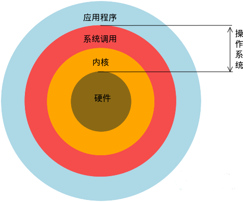

Linux简介
一.Linux为何物
Linux就是一个操作系统，就像你多少已经了解的Windows（xp,7,8）和Max OS,至于操作系统是什么，就不用过多解释了,如果你学习过前面的入门课程，应该会有个基本概念了,这里简单介绍下操作系统在整个计算机系统中的角色
我们的linux也就是系统调用和内核那两层了，当然直观的来看，我们使用的操作系统还包含一些在其上运行的应用程序,比如文本编辑器，浏览器，电子邮件。
二.Linux历史简介
操作系统始于二十世纪50年代，当时的操作系统能运行批处理程序。批处理程序不需要用户的交互，它从文件或者穿孔卡片读取数据，然后输出到另外一个文件或者打印机。
二十世纪六十年代初，交互式操作系统开始流行。它不仅仅可以交互，还能使多个用户从不同的终端同时操作主机。这样的操作系统被称作分时操作系统，它的出现对批处理操作系统是个极大的挑战。许多人尝试开发分时操作系统， 其中包括一些大学的研究项目和商业项目。当时有一个项目叫做"Multics",它的技术在当时很创新。"Multics"项目的开发并不顺利。它花费了远超过预计的时间来完成，却没有在操作系统市场上占到多少份额。而参加该项目的一个开发团体-贝尔实验室退出了这个项目。他们在退出后开发了他们自己的一个操作系统-Unix.
Unix最初免费发布并因此在大学里受到欢迎。后来，UNIX实现了TCP/IP协议栈，成为了早期工作站的操作系统的一个流行选择。
1990年，Unix在服务器市场尤其是大学校园成为主流操作系统，许多校园都有Unix主机，当然还包括一些研究它的计算机系的学生。这些学生都渴望能在自己的电脑上运行UNIX。不幸的是，从那时候开始，UNIX开始变得商业化，它的价格也变得非常昂贵。而唯一低廉的选择就是MINIX,这是一个功能有限的类似UNIX的操作系统，作者Andrew Tanebaum开发它的目的是用于教学。
1991年10月，Linus Torvalds（Linux之父）在赫尔辛基大学接触UNIX,他希望能在自己的电脑上运行一个类似的操作系统。可是UNIX的商业版本非常昂贵，于是他从MINIX开始入手，计划开发一个比MINIX性能更好的操作系统。很快他就开始了自己的开发工作。他第一次发行的版本很快吸引了一些黑客。尽管最初的LINUX并没有多少用处，但由于一些黑客的加入使它很快就具有了许多吸引人的特性，甚至一些对操作系统开发不感兴趣的人也开始关注它。
Linux本身只是操作系统的内核。内核是使其他程序能够运行的基础。它实现了多任务和硬件管理，用户或者系统管理员交互运行的所有程序实际上都运行在内核之上。其中有些程序是必需的，比如说，命令行解释器(shell),它用于用户交互和编写shell脚本（.bat文件）。 Linus没有自己去开发这些应用程序，而是使用已有的自由软件。这减少了搭建开发环境而所需花费的工作量。实际上，他经常改写内核，使得那些程序能更容易在LINUX上运行。许多重要的软件，包括C编译器，都来自于自由软件基金GNU项目。GNU项目开始于1984年，目的是为了开发一个完全类似于UNIX的免费操作系统。为了表扬GNU对LINUX的贡献，许多人把LINUX称为GNU/LINUX(GNU有自己的内核。）
1992－1993年，LINUX内核具备了挑战UNIX的所有本质特性，包括TCP/IP网络，图形界面系统（X window).LINUX 同样也吸引了许多行业的关注。一些小的公司开发和发行LINUX.有几十个LINUX用户社区成立。1994年，LINUX 杂志也开始发行。
Linux 内核1.0在1994年三月发布，内核的发布要经历许多开发周期，直至到达一个稳定的版本。
下面列举一下Linux诞生大事件
-
1965年，Bell实验室、MIT、GE（通用电气公司）准备开发Multics系统，为了同时支持300个终端访问主机，但是1969年失败了；
刚开始并没有鼠标、键盘，输入设备只有卡片机，因此如果要测试某个程序，则需要将读卡纸插入卡片机，如果有错误，还需要重新来过； Multics：Multiplexed Information and Computing Service
-
1969年，Ken Thompson（C语言之父）利用汇编语言开发了FIle Server System（Unics，即Unix的原型）
因为汇编语言对于硬件的依赖性，因此只能针对特定硬件； 只是为了移植一款“太空旅游”的游戏；
-
1973年，Dennis Ritchie和Ken Thompson发明了C语言，而后写出了Unix的内核
将B语言改成C语言，由此产生了C语言之父； 90%的代码是C语言写的，10%的代码用汇编写的，因此移植时只要修改那10%的代码即可；
-
1977年，Berkeley大学的Bill Joy针对他的机器修改Unix源码，称为BSD（Berkeley Software Distribution）
Bill Joy是Sun公司的创始人；
- 1979年，Unix发布System V，用于个人计算机；
- 1984年，因为Unix规定：“不能对学生提供源码”，Tanenbaum老师自己编写兼容于Unix的Minix，用于教学；
-
1984年，Stallman开始GNU（GNU's Not Unix）项目，创办FSF（Free Software Foundation）基金会；
产品：GCC、Emacs、Bash Shell、GLIBC； 倡导“自由软件”； GNU的软件缺乏一个开放的平台运行，只能在Unix上运行； 自由软件指用户可以对软件做任何修改，甚至再发行，但是始终要挂着GPL的版权； 自由软件是可以卖的，但是不能只卖软件，而是卖服务、手册等；
- 1985年，为了避免GNU开发的自由软件被其他人用作专利软件，因此创建GPL（General Public License）版权声明；
- 1988年，MIT为了开发GUI，成立了XFree86的组织；
- 1991年，芬兰赫尔辛基大学的研究生Linus Torvalds基于gcc、bash开发了针对386机器的Lniux内核；
- 1994年，Torvalds发布Linux-v1.0；
- 1996年，Torvalds发布Linux-v2.0，确定了Linux的吉祥物：企鹅；
UNIX进化史（UNIX大家族族谱1969-2013）

三、linux重要人物
1.Ken Thompson：C语言之父和Unix之父

2.Dennis Ritchie：C语言之父和Unix之父

3.Stallman：著名黑客，GNU创始人，开发了Emacs、gcc、bash shell

4.Bill Joy：BSD开发者

5.Tanenbaum：Minix开发者

6.Linus Torvalds：Linux之父，芬兰赫尔辛基大学

四、Linux与Windows到底有哪些不同
1.免费与收费
- 最新正版Windows8.1 官方售价￥888；
- Linux 免费或少许费用
2.软件与支持
- windows平台:数量和质量的优势，不过大部分为收费软件；由微软官方提供重要支持和服务
- linux平台：大都为开源自由软件，用户可以修改定制和再发布，由于基本免费没有资金支持，部分软件质量和体验欠缺；有全球所有的Linux开发者和自由软件社区提供支持
3.安全性
- Windows平台：三天两头打补丁安装系统安全更新，还是会中病毒木马什么的，各位用户自己感受
- Linux平台：要说linux没有安全问题，那当然是不可能的，不会中病毒什么的，也不可能，这一点仁者见仁智者见智，相对来说肯定比Windows平台要更加安全，使用linux你也不用装某杀毒，某毒霸之类的了
4.使用习惯
- Windows：普通用户基本都是纯图形界面下操作使用，依靠鼠标和键盘完成一切操作，用户上手容易入门简单
- Linux：兼具图形界面操作（需要使用带有桌面环境的发行版）和完全的命令行操作，可以只用键盘完成一切操作，新手入门较困难，需要一些学习和指导（这正是我们要做的事情），一旦熟练之后，神马windows，神马图形界面都是浮云~~~
5.可定制性
- Windows这些年之前算是全封闭的,系统可定制性很差
- Linux：你想怎么玩就怎么玩，windows能做到得它都能，windows做不到的，它也能
6.应用范畴
- 或许你之前不知道Linux,要知道，你之前在windows使用百度，谷歌，上淘宝，聊QQ时，支撑这些软件和服务的，是后台成千上万的Linux服务器主机，它们时时刻刻都在进行着忙碌的数据处理和运算，可以说世界上大部分软件和服务都是运行在Linux之上的，什么云计算，大数据，移动互联网，说得风起云涌，要没用Linux,全都得瘫（除了微软自家哈），相比这应用范畴大家也懂了哈，要没有Linux，Windows可干不了几个事
7.windows没有的
- 稳定的系统
- 安全性和漏洞的快速修补
- 多用户
- 用户和用户组的规划
- 相对较少的系统资源占用
- 可定制裁剪，移植到嵌入式平台（如安卓设备）
- 可选择的多种图形用户界面（如GNOME,KDE）
8.Linux没有的
- 没有特定的支持厂商
- 游戏娱乐支持度不足
- 专业软件支持度不足
五、如何学习Linux
1.学习心态
- 明确目的：你是要用Linux来干什么，搭建服务器，做程序开发，还是日常办公，还是娱乐游戏
- 面对现实：Linux大都在命令行下操作，能否接受不用或少用图形界面
- 是学习Linux操作系统本身还是某一个Linux发行版（Ubuntu,CentOS,Fedora,OpenSUSE,Debian,Mint,FreeBSD等等),如果你对发行版的概念或者它们之间的关系不明确的话可以参看Linux发行版wiki
2.注重基础，从头开始
大致的学习路径如下: